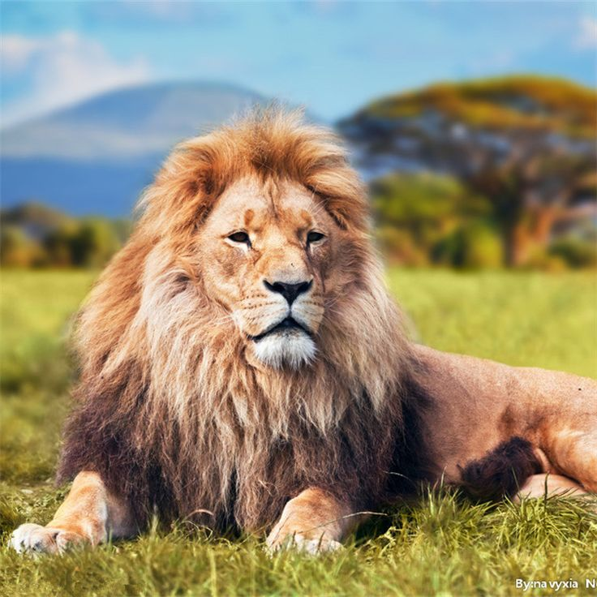

nature.co
Sidebar
Hewan
Cheetah

Cheetah adalah salah satu hewan tercepat di darat. Mereka memiliki tubuh yang ramping dan kaki yang panjang.
Harimau
Harimau adalah salah satu predator puncak di hutan. Mereka memiliki garis-garis hitam unik di tubuh mereka.
Singa
Singa dikenal sebagai "raja hutan". Mereka adalah hewan sosial yang tinggal dalam kelompok yang disebut kawanan.